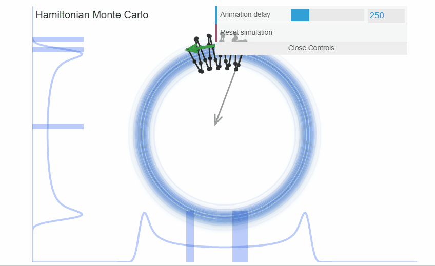
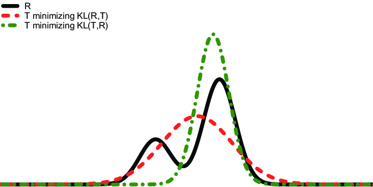
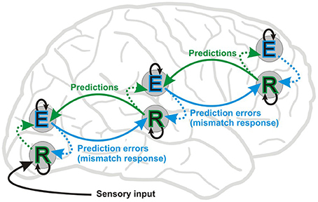

library(brms)
f <- brms::brmsformula(qsec ~ 0 + Intercept + mpg)Bayesian Statistics
9. Linear Models (Posterior)
Dominique Makowski
D.Makowski@sussex.ac.uk
D.Makowski@sussex.ac.uk
Recap
- Formula specification
- Prior specification
- Intercept
- e.g., \(\mu\) =
mean(mtcars$qsec)and \(\sigma\) =10 * sd(mtcars$qsec)
- e.g., \(\mu\) =
- Slope
- e.g., \(\mu\) = 0 and \(\sigma\) = 5
priors <- c(
brms::set_prior("normal(17.85, 17.9)", class = "b", coef = "Intercept"),
brms::set_prior("normal(0, 5)", class = "b", coef = "mpg")
) |>
brms::validate_prior(f, data=mtcars)
priors prior class coef group resp dpar nlpar lb ub source
(flat) b default
normal(17.85, 17.9) b Intercept user
normal(0, 5) b mpg user
student_t(3, 0, 2.5) sigma 0 default- Prior Predictive Checks
- Predicted response density and relationships based on the priors only
Fitting the model
- Pass the formula, the data, and the priors (optional) to
brms::brm()(“Bayesian Regression Model”)
- Options pertaining to the sampling algorithm can be specified1
MCMC - NUTS
- By default,
brmsuses MCMC- In particular, the No-U-Turn Sampler (NUTS) algorithm, which is a self-adjusting variant of Hamiltonian Monte Carlo (HMC)
- The key idea behind HMC is that it treats sampling as a physics problem, where we imagine the posterior distribution space as a hilly landscape and use momentum to explore it efficiently
- Instead of setting a fixed number of steps, NUTS keeps “rolling the ball” until it detects a U-turn (where the trajectory starts going back toward its starting point)

MCMC vs. Variational Inference (VI)
- Stan (the language used by
brmsin the background) also implements variational inference algorithms that sample from an approximation of the posterior, which are faster but less accurate- You can use them by specifying
algorithm = "meanfield",algorithm = "fullrank", oralgorithm = "pathfinder" - Unlike MCMC, which samples from the true posterior, Variational Inference (VI) approximates it using simpler distribution (e.g., Gaussian) and minimizes the difference between the two (e.g., optimizing the Kullback-Leibler KL divergence)
- You can use them by specifying
- Pros:
- Can be useful for “quick” checks and adjustments but should not necessarily be used for final results
- If the uncertainty estimation is not the main goal but speed is
- Cons:
- Less accurate
- VI posteriors may be overconfident (narrower CI)

VI in the Brain
- The brain is thought to be a Bayesian inference machine, constantly predicting sensory input and updating beliefs based on errors
- Prediction errors (mismatch between expectation and reality) drive learning and perception
- Computing exact posteriors would be too computationally expensive for the brain
- Instead, it might approximates the posterior in a way similar to VI:
- The brain represents beliefs with simpler distributions (e.g., Gaussian-like approximations).
- Instead of exploring all possibilities, it minimizes a function (“Free Energy”) to find the best fit
- The brain minimizes Free Energy to improve its model could be mathematically similar to VI minimizing the Kullback-Leibler (KL) divergence between an approximate posterior and the true posterior
- Cognitive and neural processing could be optimized for efficiency rather than exactness, much like how VI trades accuracy for speed

MCMC parameters
- For this module we will focus on MCMC, which is slowest but the “true” Bayesian solution
- MCMC can be tuned
- Number of chains, number of iterations
- Warm-up: the number of initial samples that are discarded (burn-in phase)
- Thinning: the number of samples that are kept (every n-th sample)
- Adaptation: the algorithm can adapt its parameters during the burn-in phase
- …
- In most cases, the default values are fine
- It’s only when there are problems that you should start considering tweaking these parameters
Sampling Diagnostics - Trace Plots
- HAIRY CATERPILLARS
- The MCMC algorithm is supposed to draw independent samples from the posterior
- There should be no autocorrelation between successive samples (i.e., no patterns in the trace plot)
- They should look like hairy caterpillars
- We typically draw multiple independent chains (useful for parallel computing, e.g., one chain per core)
- The plots shows 1) the posterior distribution of the parameters and 2) the trace plot of the MCMC algorithm
- One trace per chain: there should not be any pattern
Sampling Diagnostics - Effective Sample Size (ESS)
Family: gaussian
Links: mu = identity; sigma = identity
Formula: qsec ~ 0 + Intercept + mpg
Data: mtcars (Number of observations: 32)
Draws: 4 chains, each with iter = 1000; warmup = 500; thin = 1;
total post-warmup draws = 2000
Regression Coefficients:
Estimate Est.Error l-95% CI u-95% CI Rhat Bulk_ESS Tail_ESS
Intercept 15.31 1.06 13.08 17.40 1.01 723 718
mpg 0.13 0.05 0.02 0.24 1.01 722 663
Further Distributional Parameters:
Estimate Est.Error l-95% CI u-95% CI Rhat Bulk_ESS Tail_ESS
sigma 1.70 0.23 1.33 2.23 1.00 697 779
Draws were sampled using sampling(NUTS). For each parameter, Bulk_ESS
and Tail_ESS are effective sample size measures, and Rhat is the potential
scale reduction factor on split chains (at convergence, Rhat = 1).- The effective sample size (ESS) is an estimation of the number of independent samples that we have
- ESS (“Bulk” ESS) is a measure of how well the centre of the posterior distribution is described
- Can be see as an index of the accuracy of the indices of centrality
- “Tail” ESS is a measure of how well the tails of the distribution are described
- Can be see as an index of the accuracy of the indices based on range
- ESS should be at least 1000 (see
effectsize::interpret_ess())
Sampling Diagnostics - \(\hat{R}\)
- The \(\hat{R}\) (“R-hat”) is a measure of convergence
- It compares the variance within chains to the variance between chains
- If the chains have not converged to a common distribution, the \(\hat{R}\) statistic will be greater than one
- Should be lower than 1.01 (see
effectsize::interpret_rhat())
Posterior Description
# Fixed Effects
Parameter | Median | 95% CI | pd | Rhat | ESS
---------------------------------------------------------------
(Intercept) | 15.31 | [13.08, 17.40] | 100% | 1.008 | 700.00
mpg | 0.13 | [ 0.02, 0.24] | 99.60% | 1.007 | 689.00
# Sigma
Parameter | Median | 95% CI | pd | Rhat | ESS
---------------------------------------------------------
sigma | 1.68 | [1.33, 2.23] | 100% | 1.005 | 670.00- Indices of centrality, uncertainty, existence, significance
- Customize the parameters shown
# Fixed Effects
Parameter | Mean | 89% CI | pd | Rhat | ESS
--------------------------------------------------------------
(Intercept) | 15.31 | [13.64, 16.99] | 100% | 1.008 | 700.00
mpg | 0.13 | [ 0.04, 0.20] | 99.60% | 1.007 | 689.00
# Sigma
Parameter | Mean | 89% CI | pd | Rhat | ESS
-------------------------------------------------------
sigma | 1.70 | [1.37, 2.10] | 100% | 1.005 | 670.00Effect Significance
# Fixed Effects
Parameter | Median | 95% CI | pd | Rhat | ESS
---------------------------------------------------------------
(Intercept) | 15.31 | [13.08, 17.40] | 100% | 1.008 | 700.00
mpg | 0.13 | [ 0.02, 0.24] | 99.60% | 1.007 | 689.00
# Sigma
Parameter | Median | 95% CI | pd | Rhat | ESS
---------------------------------------------------------
sigma | 1.68 | [1.33, 2.23] | 100% | 1.005 | 670.00- Easiest is to use pd or decision threshold based on CI overlapping 0 (similar to Frequentist NHST)
- ROPE? But what ROPE bounds to use?
- Not straightforward to define
- Easier to use when data is standardized (and parameters are expressed in terms of SD)
- Or when you have clear hypotheses on the effect size
- BF?
- Complicated to compute for model parameters
Model Performance - R2
- Once that sampling quality has been assessed, and that the posteriors have been described, we can assess the model’s performance
- How well does the model fit/predict the data?
- R-squared, the percentage of variance explained by the model (for linear models), can be computed
- With Bayesian statistics - where every parameter is probabilistic, we also get a posterior distribution of the R-squared, and can thus compute credible intervals
- Note that R-squared is straightforward to interpret for linear model but gets tricky for GLMs (because there is no “variance” of the outcome in the same sense). We cannot say “the model explains X% of the variance” baed on the R2 for GLMs.
Model Performance - Relative Indices
- Other “relative” indices of fit exist to compare models between them (we will see that later)
Posterior Predictive Check
- Posterior predictive checks is a way to assess the model by comparing the observed data to the predicted data
Posterior Predictive Check - Distribution
- We can see wether the distribution of predicted values are closer to the observed values (in particular, its mean when using linear models)
- Note the use of
geom_line(stat="density")for the lines instead ofgeom_density()to be able to modify the alpha of the lines (and not the filling) - Posterior predictive checks of the distribution is particularly useful for more complex models to see if the model manages to reproduce the
Visualizing the Effects - Datagrid
- We typically are interested in visualizing the effects (i.e., the impact of the predictors)
- This means predicting the outcome for different values of the predictor
Visualizing the Effects - Make Predictions
- Predict data on this hypothetical dataset
pred <- get_predicted(model, data=newdata, iterations=250) |>
as.data.frame() |>
cbind(newdata)
head(pred) Predicted iter_1 iter_2 iter_3 iter_4 iter_5 iter_6 iter_7
1 16.52748 16.38425 17.69495 16.60526 16.43123 16.29018 17.13837 17.14352
2 17.16278 17.10572 18.12744 17.39246 17.00082 17.17579 17.32551 17.42751
3 17.79808 17.82718 18.55994 18.17967 17.57042 18.06140 17.51265 17.71151
4 18.43338 18.54865 18.99244 18.96687 18.14002 18.94702 17.69979 17.99550
5 19.06868 19.27011 19.42494 19.75408 18.70962 19.83263 17.88693 18.27949
6 19.70398 19.99158 19.85744 20.54129 19.27922 20.71825 18.07407 18.56349
iter_8 iter_9 iter_10 iter_11 iter_12 iter_13 iter_14 iter_15
1 16.08705 15.40554 17.08481 16.35078 16.90511 17.93837 16.89727 17.23075
2 16.65531 16.24475 17.43307 16.92888 17.42841 18.21705 17.43354 17.80519
3 17.22358 17.08397 17.78133 17.50697 17.95171 18.49574 17.96981 18.37964
4 17.79185 17.92318 18.12959 18.08507 18.47501 18.77442 18.50608 18.95408
5 18.36012 18.76239 18.47785 18.66316 18.99831 19.05311 19.04235 19.52853
6 18.92838 19.60161 18.82611 19.24126 19.52161 19.33179 19.57862 20.10297
iter_16 iter_17 iter_18 iter_19 iter_20 iter_21 iter_22 iter_23
1 15.77784 15.98522 16.41464 16.23804 16.65223 16.47624 16.62878 16.79662
2 16.75569 16.93657 17.01045 16.85616 17.07684 16.93098 17.15072 17.12206
3 17.73355 17.88791 17.60625 17.47429 17.50145 17.38571 17.67266 17.44750
4 18.71140 18.83926 18.20206 18.09241 17.92606 17.84045 18.19460 17.77295
5 19.68925 19.79061 18.79787 18.71054 18.35067 18.29519 18.71654 18.09839
6 20.66710 20.74196 19.39367 19.32866 18.77528 18.74993 19.23848 18.42383
iter_24 iter_25 iter_26 iter_27 iter_28 iter_29 iter_30 iter_31
1 15.72472 16.57374 16.28472 16.77277 16.67415 16.73971 15.79185 17.94099
2 16.64301 17.24891 17.02521 17.24848 17.28679 17.45593 16.65340 18.03459
3 17.56130 17.92407 17.76571 17.72420 17.89942 18.17214 17.51496 18.12818
4 18.47959 18.59924 18.50620 18.19991 18.51206 18.88836 18.37651 18.22178
5 19.39788 19.27440 19.24669 18.67562 19.12470 19.60457 19.23807 18.31538
6 20.31617 19.94956 19.98719 19.15134 19.73734 20.32079 20.09962 18.40898
iter_32 iter_33 iter_34 iter_35 iter_36 iter_37 iter_38 iter_39
1 16.26211 16.8708 16.33955 15.12448 15.57742 15.97813 15.81644 15.05919
2 16.96278 17.4751 16.84399 16.41132 16.99479 16.69929 16.90484 16.43718
3 17.66344 18.0794 17.34844 17.69817 18.41215 17.42045 17.99324 17.81517
4 18.36411 18.6837 17.85288 18.98501 19.82951 18.14161 19.08164 19.19316
5 19.06478 19.2880 18.35733 20.27185 21.24687 18.86277 20.17004 20.57115
6 19.76545 19.8923 18.86177 21.55869 22.66423 19.58393 21.25844 21.94914
iter_40 iter_41 iter_42 iter_43 iter_44 iter_45 iter_46 iter_47
1 15.81271 16.54837 15.93116 15.98509 16.14525 16.32867 16.61757 15.75008
2 16.86761 17.18666 16.76873 16.84117 17.05426 16.95769 17.38572 16.79921
3 17.92251 17.82496 17.60629 17.69724 17.96328 17.58671 18.15386 17.84833
4 18.97740 18.46325 18.44386 18.55332 18.87229 18.21573 18.92201 18.89746
5 20.03230 19.10154 19.28142 19.40939 19.78130 18.84475 19.69015 19.94658
6 21.08720 19.73984 20.11899 20.26547 20.69031 19.47377 20.45829 20.99571
iter_48 iter_49 iter_50 iter_51 iter_52 iter_53 iter_54 iter_55
1 16.00918 16.21475 17.12175 15.85033 17.54786 16.79583 16.43327 16.10716
2 16.70529 17.00347 17.66399 16.76670 17.82987 17.46624 17.21708 16.97184
3 17.40140 17.79220 18.20623 17.68306 18.11189 18.13666 18.00088 17.83653
4 18.09751 18.58092 18.74846 18.59943 18.39391 18.80707 18.78469 18.70121
5 18.79362 19.36965 19.29070 19.51580 18.67592 19.47749 19.56849 19.56590
6 19.48973 20.15837 19.83294 20.43216 18.95794 20.14790 20.35230 20.43058
iter_56 iter_57 iter_58 iter_59 iter_60 iter_61 iter_62 iter_63
1 17.57139 17.47551 16.46482 16.94116 16.49898 17.03957 17.09424 16.98503
2 17.94406 17.74118 17.16310 17.32344 16.93220 17.10119 17.47222 17.56118
3 18.31673 18.00685 17.86138 17.70571 17.36543 17.16282 17.85021 18.13733
4 18.68941 18.27252 18.55966 18.08799 17.79866 17.22444 18.22819 18.71348
5 19.06208 18.53819 19.25795 18.47027 18.23188 17.28606 18.60618 19.28964
6 19.43475 18.80386 19.95623 18.85255 18.66511 17.34769 18.98416 19.86579
iter_64 iter_65 iter_66 iter_67 iter_68 iter_69 iter_70 iter_71
1 17.00755 16.22382 17.17149 16.02771 17.10136 17.17895 16.07439 17.35175
2 17.58588 17.07264 17.30395 16.49986 17.52183 17.54793 16.93245 17.57207
3 18.16421 17.92146 17.43640 16.97200 17.94230 17.91691 17.79051 17.79239
4 18.74254 18.77029 17.56885 17.44414 18.36278 18.28589 18.64857 18.01270
5 19.32087 19.61911 17.70130 17.91629 18.78325 18.65487 19.50663 18.23302
6 19.89920 20.46793 17.83376 18.38843 19.20372 19.02385 20.36469 18.45334
iter_72 iter_73 iter_74 iter_75 iter_76 iter_77 iter_78 iter_79
1 17.21433 16.12659 16.94347 16.86691 17.16683 14.79164 16.59227 16.78404
2 17.62625 16.96245 17.37938 17.38827 17.74776 15.81552 17.22508 17.18176
3 18.03817 17.79830 17.81530 17.90963 18.32869 16.83940 17.85789 17.57948
4 18.45009 18.63415 18.25121 18.43099 18.90962 17.86328 18.49070 17.97720
5 18.86202 19.47001 18.68713 18.95234 19.49055 18.88716 19.12351 18.37491
6 19.27394 20.30586 19.12305 19.47370 20.07148 19.91104 19.75632 18.77263
iter_80 iter_81 iter_82 iter_83 iter_84 iter_85 iter_86 iter_87
1 16.55929 15.49614 16.90306 15.76775 15.97046 16.99722 16.84345 16.90212
2 17.32045 16.53170 17.21360 16.80192 16.62841 17.54809 17.42732 17.49365
3 18.08161 17.56726 17.52414 17.83609 17.28636 18.09896 18.01119 18.08518
4 18.84276 18.60282 17.83468 18.87025 17.94431 18.64983 18.59506 18.67671
5 19.60392 19.63838 18.14522 19.90442 18.60226 19.20070 19.17893 19.26824
6 20.36508 20.67394 18.45576 20.93859 19.26021 19.75157 19.76280 19.85977
iter_88 iter_89 iter_90 iter_91 iter_92 iter_93 iter_94 iter_95
1 16.53591 15.66347 16.85700 16.29807 16.30278 16.21586 16.88688 16.48153
2 17.29159 16.49655 17.47485 17.03848 16.86890 17.01597 17.30717 16.94573
3 18.04726 17.32962 18.09270 17.77890 17.43501 17.81607 17.72747 17.40993
4 18.80293 18.16269 18.71055 18.51932 18.00113 18.61618 18.14776 17.87413
5 19.55860 18.99576 19.32840 19.25974 18.56725 19.41629 18.56806 18.33833
6 20.31428 19.82884 19.94625 20.00015 19.13337 20.21639 18.98835 18.80253
iter_96 iter_97 iter_98 iter_99 iter_100 iter_101 iter_102 iter_103
1 17.07701 16.17588 16.70311 16.71663 16.21761 16.19375 16.48411 16.69425
2 17.63500 16.97185 17.32428 17.35100 16.82603 16.99573 17.18036 17.24946
3 18.19300 17.76782 17.94545 17.98537 17.43445 17.79772 17.87661 17.80466
4 18.75100 18.56379 18.56661 18.61974 18.04287 18.59970 18.57286 18.35987
5 19.30900 19.35976 19.18778 19.25411 18.65129 19.40169 19.26911 18.91508
6 19.86699 20.15573 19.80894 19.88849 19.25972 20.20367 19.96536 19.47029
iter_104 iter_105 iter_106 iter_107 iter_108 iter_109 iter_110 iter_111
1 16.44930 15.18797 17.08420 17.05843 16.71028 16.17842 16.35125 16.62097
2 17.03745 16.44856 17.53100 17.45404 17.18866 16.89122 16.87114 17.18379
3 17.62559 17.70916 17.97781 17.84965 17.66703 17.60402 17.39102 17.74661
4 18.21373 18.96975 18.42462 18.24526 18.14541 18.31682 17.91090 18.30943
5 18.80188 20.23034 18.87142 18.64088 18.62378 19.02962 18.43078 18.87224
6 19.39002 21.49094 19.31823 19.03649 19.10215 19.74242 18.95067 19.43506
iter_112 iter_113 iter_114 iter_115 iter_116 iter_117 iter_118 iter_119
1 16.48480 16.25621 15.86034 16.91335 16.44883 17.28930 16.03374 16.36281
2 17.11139 17.14608 16.65608 17.69979 16.95375 17.47964 16.86396 16.94231
3 17.73798 18.03595 17.45182 18.48623 17.45867 17.66998 17.69417 17.52182
4 18.36457 18.92582 18.24757 19.27268 17.96359 17.86032 18.52439 18.10132
5 18.99116 19.81569 19.04331 20.05912 18.46851 18.05065 19.35461 18.68082
6 19.61776 20.70555 19.83905 20.84556 18.97343 18.24099 20.18482 19.26032
iter_120 iter_121 iter_122 iter_123 iter_124 iter_125 iter_126 iter_127
1 16.23881 16.45206 15.95239 16.30594 16.53463 17.29878 16.28236 15.82438
2 17.08954 17.33382 16.82108 17.13319 17.14890 17.80901 17.06240 16.69591
3 17.94026 18.21558 17.68977 17.96044 17.76316 18.31925 17.84244 17.56743
4 18.79098 19.09734 18.55846 18.78769 18.37743 18.82948 18.62248 18.43895
5 19.64171 19.97910 19.42715 19.61494 18.99170 19.33972 19.40252 19.31047
6 20.49243 20.86086 20.29584 20.44219 19.60597 19.84995 20.18256 20.18200
iter_128 iter_129 iter_130 iter_131 iter_132 iter_133 iter_134 iter_135
1 17.52742 16.63947 16.65251 17.04728 16.89255 17.01034 16.39905 16.47439
2 17.68154 17.18100 17.21588 17.28550 17.43273 17.27733 17.09140 17.02721
3 17.83566 17.72253 17.77924 17.52372 17.97291 17.54433 17.78375 17.58002
4 17.98977 18.26406 18.34261 17.76194 18.51310 17.81132 18.47610 18.13283
5 18.14389 18.80559 18.90597 18.00016 19.05328 18.07831 19.16845 18.68564
6 18.29800 19.34712 19.46934 18.23838 19.59346 18.34531 19.86079 19.23846
iter_136 iter_137 iter_138 iter_139 iter_140 iter_141 iter_142 iter_143
1 16.86614 16.68557 16.00076 16.38028 15.77289 15.69769 16.24212 16.04658
2 17.42190 17.22347 16.91682 16.94617 16.75935 16.62235 16.93446 16.89031
3 17.97766 17.76137 17.83288 17.51207 17.74581 17.54701 17.62680 17.73405
4 18.53342 18.29927 18.74894 18.07797 18.73227 18.47167 18.31914 18.57778
5 19.08918 18.83717 19.66500 18.64387 19.71873 19.39633 19.01148 19.42152
6 19.64493 19.37507 20.58106 19.20976 20.70519 20.32099 19.70382 20.26525
iter_144 iter_145 iter_146 iter_147 iter_148 iter_149 iter_150 iter_151
1 16.78035 17.09549 16.62513 15.91855 17.07469 16.03211 16.84652 16.14366
2 17.32466 17.51720 17.14386 16.81476 17.48191 16.69894 17.42829 17.14195
3 17.86898 17.93890 17.66260 17.71097 17.88914 17.36577 18.01005 18.14024
4 18.41329 18.36060 18.18133 18.60718 18.29637 18.03260 18.59181 19.13853
5 18.95760 18.78231 18.70006 19.50339 18.70360 18.69943 19.17357 20.13682
6 19.50191 19.20401 19.21880 20.39959 19.11083 19.36627 19.75533 21.13512
iter_152 iter_153 iter_154 iter_155 iter_156 iter_157 iter_158 iter_159
1 15.58953 17.03381 16.87915 17.23801 17.90509 17.56030 16.76818 15.96524
2 16.85483 17.51142 17.58065 17.69434 17.96775 17.87483 17.13798 16.89860
3 18.12013 17.98904 18.28214 18.15066 18.03041 18.18937 17.50779 17.83197
4 19.38542 18.46665 18.98364 18.60699 18.09307 18.50391 17.87759 18.76534
5 20.65072 18.94427 19.68514 19.06331 18.15573 18.81845 18.24740 19.69870
6 21.91602 19.42188 20.38663 19.51964 18.21839 19.13299 18.61720 20.63207
iter_160 iter_161 iter_162 iter_163 iter_164 iter_165 iter_166 iter_167
1 17.43965 16.50958 15.94888 16.22202 16.58297 16.05747 17.79746 15.66998
2 17.66505 17.16078 16.64989 16.98993 17.31474 16.83685 17.89498 16.73198
3 17.89044 17.81198 17.35090 17.75785 18.04651 17.61623 17.99250 17.79398
4 18.11584 18.46318 18.05190 18.52576 18.77828 18.39560 18.09002 18.85599
5 18.34124 19.11438 18.75291 19.29368 19.51006 19.17498 18.18754 19.91799
6 18.56663 19.76558 19.45392 20.06159 20.24183 19.95436 18.28506 20.97999
iter_168 iter_169 iter_170 iter_171 iter_172 iter_173 iter_174 iter_175
1 15.96645 17.18905 16.77773 16.80722 17.35568 16.00628 16.98969 17.13052
2 16.83873 17.62614 17.20669 17.35445 17.47115 16.73274 17.32270 17.56799
3 17.71101 18.06323 17.63566 17.90168 17.58662 17.45921 17.65570 18.00546
4 18.58329 18.50032 18.06462 18.44892 17.70210 18.18567 17.98871 18.44294
5 19.45557 18.93742 18.49358 18.99615 17.81757 18.91213 18.32171 18.88041
6 20.32785 19.37451 18.92254 19.54338 17.93304 19.63860 18.65472 19.31788
iter_176 iter_177 iter_178 iter_179 iter_180 iter_181 iter_182 iter_183
1 16.29829 15.83028 16.92029 14.91770 15.18336 16.88985 17.18735 16.16108
2 16.86280 16.72091 17.30286 16.18457 16.47320 17.17379 17.78686 16.76022
3 17.42732 17.61154 17.68543 17.45143 17.76304 17.45773 18.38637 17.35936
4 17.99183 18.50217 18.06799 18.71830 19.05289 17.74167 18.98588 17.95850
5 18.55634 19.39279 18.45056 19.98516 20.34273 18.02561 19.58539 18.55764
6 19.12085 20.28342 18.83313 21.25203 21.63257 18.30955 20.18490 19.15678
iter_184 iter_185 iter_186 iter_187 iter_188 iter_189 iter_190 iter_191
1 17.23429 16.04598 14.94555 16.01753 17.19405 16.06996 16.51727 16.88577
2 17.80754 16.72851 16.04004 17.02868 17.53774 16.81831 17.07395 17.57838
3 18.38079 17.41103 17.13453 18.03983 17.88144 17.56666 17.63063 18.27098
4 18.95404 18.09356 18.22902 19.05099 18.22513 18.31501 18.18732 18.96359
5 19.52729 18.77609 19.32351 20.06214 18.56883 19.06336 18.74400 19.65620
6 20.10054 19.45862 20.41800 21.07329 18.91252 19.81171 19.30068 20.34880
iter_192 iter_193 iter_194 iter_195 iter_196 iter_197 iter_198 iter_199
1 16.57668 16.10318 16.03810 15.72732 16.86497 16.96545 16.86407 16.46202
2 16.90934 16.98771 16.87026 16.44841 17.64912 17.40620 17.27690 17.25624
3 17.24200 17.87223 17.70242 17.16951 18.43326 17.84694 17.68974 18.05047
4 17.57466 18.75676 18.53458 17.89061 19.21741 18.28769 18.10257 18.84469
5 17.90733 19.64129 19.36674 18.61170 20.00156 18.72843 18.51540 19.63891
6 18.23999 20.52581 20.19890 19.33280 20.78570 19.16918 18.92823 20.43313
iter_200 iter_201 iter_202 iter_203 iter_204 iter_205 iter_206 iter_207
1 16.14662 17.13965 16.46727 16.34424 16.29028 17.64434 16.61544 17.97009
2 16.79092 17.50863 17.07459 16.99334 16.86283 17.84754 17.06482 18.12163
3 17.43521 17.87761 17.68191 17.64244 17.43539 18.05073 17.51420 18.27317
4 18.07951 18.24660 18.28922 18.29155 18.00794 18.25392 17.96357 18.42470
5 18.72380 18.61558 18.89654 18.94065 18.58049 18.45712 18.41295 18.57624
6 19.36810 18.98457 19.50385 19.58975 19.15304 18.66031 18.86233 18.72778
iter_208 iter_209 iter_210 iter_211 iter_212 iter_213 iter_214 iter_215
1 16.25722 15.74742 16.46349 16.81402 17.10746 16.88624 17.48280 16.78577
2 16.77095 16.71316 17.12845 17.33777 17.61995 17.66104 17.77649 17.40714
3 17.28469 17.67890 17.79341 17.86151 18.13244 18.43585 18.07018 18.02850
4 17.79842 18.64465 18.45837 18.38526 18.64493 19.21065 18.36386 18.64986
5 18.31215 19.61039 19.12333 18.90901 19.15742 19.98546 18.65755 19.27123
6 18.82589 20.57613 19.78829 19.43275 19.66991 20.76026 18.95124 19.89259
iter_216 iter_217 iter_218 iter_219 iter_220 iter_221 iter_222 iter_223
1 16.80332 16.16037 15.98769 16.82386 16.14977 16.64552 15.65010 16.25076
2 17.19339 16.97079 16.78591 17.45304 17.16477 16.89425 16.50140 17.26305
3 17.58346 17.78120 17.58413 18.08221 18.17978 17.14298 17.35271 18.27534
4 17.97353 18.59162 18.38235 18.71139 19.19478 17.39171 18.20401 19.28763
5 18.36360 19.40203 19.18057 19.34057 20.20979 17.64045 19.05532 20.29992
6 18.75368 20.21244 19.97879 19.96975 21.22480 17.88918 19.90662 21.31222
iter_224 iter_225 iter_226 iter_227 iter_228 iter_229 iter_230 iter_231
1 16.18622 16.20675 17.50357 16.69041 16.76039 16.65408 16.95041 16.75450
2 16.90886 16.81947 17.96228 17.25006 17.27888 17.12074 17.64878 17.20452
3 17.63150 17.43218 18.42100 17.80971 17.79737 17.58741 18.34714 17.65454
4 18.35413 18.04490 18.87971 18.36937 18.31585 18.05407 19.04550 18.10457
5 19.07677 18.65762 19.33843 18.92902 18.83434 18.52073 19.74386 18.55459
6 19.79940 19.27033 19.79714 19.48867 19.35283 18.98740 20.44223 19.00462
iter_232 iter_233 iter_234 iter_235 iter_236 iter_237 iter_238 iter_239
1 17.58872 16.08319 15.79890 16.44414 16.75532 16.47611 17.35105 17.14176
2 17.81401 17.01195 16.65981 17.39922 17.21672 17.18610 17.69665 17.61828
3 18.03930 17.94072 17.52071 18.35430 17.67813 17.89609 18.04226 18.09480
4 18.26459 18.86949 18.38161 19.30938 18.13953 18.60608 18.38786 18.57132
5 18.48988 19.79825 19.24251 20.26446 18.60093 19.31606 18.73346 19.04784
6 18.71518 20.72702 20.10342 21.21954 19.06234 20.02605 19.07906 19.52436
iter_240 iter_241 iter_242 iter_243 iter_244 iter_245 iter_246 iter_247
1 16.95405 15.32461 17.24354 15.47192 17.22519 16.82297 16.98327 15.62068
2 17.60478 16.54953 17.72135 16.21576 17.39666 17.52086 17.89469 16.34450
3 18.25552 17.77445 18.19917 16.95961 17.56812 18.21874 18.80612 17.06832
4 18.90626 18.99937 18.67698 17.70345 17.73959 18.91663 19.71754 17.79213
5 19.55699 20.22429 19.15479 18.44730 17.91106 19.61451 20.62896 18.51595
6 20.20773 21.44921 19.63260 19.19114 18.08252 20.31240 21.54038 19.23977
iter_248 iter_249 iter_250 mpg
1 16.36240 16.41993 16.21646 10
2 17.14211 17.06809 17.06299 15
3 17.92182 17.71626 17.90953 20
4 18.70153 18.36442 18.75606 25
5 19.48124 19.01259 19.60260 30
6 20.26095 19.66075 20.44913 35Predictedcolumn corresponds to themeanpredicted value- We want to put the predictions in a “long” format (convenient for plotting)
Visualizing the Effects - Plot
- Plot predictions with real data points
- Each line corresponds to one “plausible” regression line (given our posterior beliefs about the model parameters)
- Most of them indicate a positive relationship between
mpgandqsec
Exercice
- Is there a relationship between Petal Length and Petal Width (
irisbuiltin dataset)?- Use default priors
The End (for now)
Thank you!